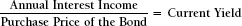

Glossary
10-K The annual report that every issuer of public securities, every company whose stock is listed on any stock exchange, and any company with 500 or more shareholders must submit to the Securities and Exchange Commission. The 10-K is similar to the annual report that every shareholder receives; it contains a complete set of financial statements and more backup detail, but no photographs or “public relations” –type information.
Accelerated Cost Recovery System (ACRS) A depreciation methodology prescribed by the Internal Revenue Service. It has been modified a number of times since it was first introduced; the version currently prescribed is known as the Modified Accelerated Cost Recovery System (MACRS). It shortens the depreciable lives of equipment but provides less than the full straight-line deduction the first year. The depreciable lives prescribed by MACRS are changed frequently as the technological lives of equipment become shorter. The use of MACRS is required by the IRS for tax reporting but is not acceptable under GAAP for financial reporting.
Accounting The reporting of the past in dollars. Accounting records business transactions after they occur. When all of these transactions are recorded, the results are compiled (added up) and summarized in what we know as financial statements.
Accounts Payable The amount the company owes to its suppliers for products and services that it has already received, but has not yet paid for. Accounts payable is a short-term liability, meaning that it is due in less than one year; it is probably due within 30 to 60 days from the date of the balance sheet.
Accounts Receivable The amount of money that the company is owed by its customers for products and/or services that it has provided but for which it has not yet been paid. It is a current asset, meaning that it is due in less than one year; it is probably due within 30 to 60 days of the balance sheet date.
Accounts Receivable Financing A form of borrowing in which the company uses accounts receivable as collateral for loans provided by banks or commercial finance companies.
Accrual Accounting The accounting methodology used by essentially all public corporations and almost all private companies. With this methodology, revenues are recorded when the money is earned and expenses are recorded when the resource is consumed, without regard to when cash is received or spent. The alternative methodology is doing the accounting on a cash basis. This means that revenue is recorded when the cash is received and expenses are recorded when the bills are actually paid.
Acid Test Ratio (Quick Ratio) See Quick Ratio.
Acquisition Generally, the purchase of one company by another. The transaction can be for cash, stock, debt, or any combination of these.
Administrative Expenses What the company spends on its support staff and the infrastructure that that support staff needs in order to contribute to the company’s success. Included in the support staff are:
The supporting infrastructure includes such things as:
- The corporate headquarters
- Office supplies
- The computer system
Aging Schedule A detailed listing of how long the company has been waiting for its customers to pay their bills. This is an analytical tool that helps management to gauge the effectiveness of the company’s accounts receivable collection efforts. While days’ sales outstanding (DSO) identifies the average age of receivables, it may mask specific problem situations. The aging schedule of a company that sells with 30-day payment requirements might be:
| 0–30 days | Not yet due |
| 30–45 days | Should be received soon |
| 45–60 days | Indicative of a problem; put on credit watch |
| 60–75 days | Very serious; consider stopping shipments |
| Above 75 days | Collection in doubt |
AICPA The accountants’ professional organization. The initials stand for American Institute of Certified Public Accountants.
Amortization For investments, the accounting mechanism for apportioning an investment in an intangible asset over the years of its productive (useful) life. Intangibles that are amortized include copyrights, licenses, trademarks, and goodwill. Each year a commensurate share of the whole investment will be included as a noncash expense on the income statement. This concept is very similar to depreciation expense, except that depreciation is for fixed (tangible) assets.
For a loan, an arrangement whereby fixed monthly payments that include principal and interest are calculated. Each payment includes interest for the period and a sufficient amount of principal to retire the loan after the specified number of payments. A loan that is amortized over 20 years will have 240 equal monthly payments.
Angel Financing A form of venture capital that finances a start-up at its earliest stages. The business is probably only an idea at this point. There may be a business plan, but not necessarily. The “angel” is probably a wealthy friend or relative, although it may be a venture capital firm if the idea involves a high-tech concept developed by someone with a track record in the field. The angel provides cash and management expertise in exchange for a portion of the equity.
Asset-Based Lending Borrowing funds from a bank or other financial institution using the company’s assets as collateral for the loan. A home mortgage is a form of asset-based lending that uses real estate as collateral. Working capital loans use accounts receivable and inventory as the collateral asset.
Using assets as collateral is often the only way a smaller business can borrow from a commercial bank. It can also result in lower interest rates and fees because it reduces the lender’s risk.
Assets Those resources owned by the company. These are classified as follows:
Very liquid:
- Cash and cash equivalents
- Short-term marketable securities
Working capital:
- Accounts receivable
- Inventory
Tangible or fixed assets:
- Land
- Buildings
- Machinery and equipment
- Vehicles, furniture, and fixtures
Intangible or financial assets:
- Ownership of other companies
- Other equity or debt investments
- Copyrights
- Patents
- Trademarks
- Goodwill
Audit A review and critique of the company’s accounting system, its control procedures, and the actual accounting process by a disinterested party. The elements reviewed include the recording of events and the preparation of the financial statements. The audit process also involves gaining assurance that the numbers presented in those financial statements are reasonably accurate. A certified audit is performed by an outside, independent CPA firm that is hired by the stockholders. Such a firm sometimes achieves these objectives by supervising people called “internal auditors.” These internal auditors are employees of the company but are supervised by the CPA firm.
Audit Letter (Certification Letter) The letter written by the CPA firm to the stockholders that provides assurance (or creates doubt) that the audit was performed correctly and that there is a reasonable certainty that the financial statements are presented accurately.
The letter appears in the company’s annual report and should be read. It alludes to the complexities and uncertainties of the accounting process. It is often the focal point of litigation because of differing views of what it does and does not promise.
Balance Sheet A financial statement prepared by the company at the end of every fiscal period that presents the company’s assets, liabilities, and stockholders’ equity at a point in time. The balance sheet equation is:
Assets – Liabilities = Equity
Banker’s Acceptance A bank-originated corporate credit instrument that is often used to finance product import activities. It helps the importer to be sure that it will get what it ordered and the seller to be sure that it will be paid when the product is “accepted” by the importer.
Bankruptcy The unhappy experience that results from a company’s inability to pay its bills. It can be:
Involuntary, when creditors petition the court to declare the debtor insolvent Voluntary, when the debtor company files the petition
Under Chapter 7 (of the bankruptcy code), the court appoints a trustee with broad powers to take actions, which usually lead to the liquidation of the firm’s assets and cessation of its operations.
Chapter 11 permits the company to continue operating. The company and its creditors will work together to try to salvage the business and their relationships. Payment schedules and settlements are negotiated, and debt is restructured. Creditors will often provide new loans and credit to the company in the hope that it will survive and prosper.
Basis Point A finance and banking term that means 1/100 of one percent. One full percentage point equals 100 basis points. When the Federal Reserve reduces interest rates by ½ percent, it has reduced the rates by 50 basis points.
Bill of Lading The documentation that supports the shipment of products.
Billing Cycle The interval between the times that companies send out invoices. It can be as short as a day or as long as a month. Companies should examine their customers’ payment practices and shorten the billing cycle if doing so will accelerate payments. This decision should also reflect the administrative costs of sending out invoices, a cost that frequently may be ignored.
Board of Directors The governing body of a corporation. It is elected by and accountable to the stockholders. It hires the senior executives of the organization (who may also be directors) and holds them accountable for business performance and financial integrity.
Bond A corporate debt security that is sold to the public or by private placement in order to raise funds. The maturity is usually between 5 and 30 years. The coupon rate is the stated rate of interest when the bond is issued. Corporate bonds are usually sold in units of $1,000; a bond that is selling at its face value is said to be selling at par. The price of a bond will often fluctuate in response to market conditions during the years in which the bond is outstanding. However, the corporation is obligated to refund the full par value of the bond at maturity.
Book Value An accounting term that describes the original purchase cost of fixed assets less the accumulated depreciation charged against those assets. In this regard, book value and net book value are synonymous terms.
The term book value is also used to describe the stockholders’ equity section of the company’s balance sheet. The total amount of equity shown on the balance sheet divided by the number of common shares outstanding is referred to as the book value per share:
In stock market analysis, the market price of a share of the common stock is then compared with the book value per share, which is used as a benchmark to establish the “premium” at which the shares are selling.
Breakeven Analysis A financial analysis technique that involves studying the relationships among a product’s selling price, variable and fixed costs, and production volume and their cumulative impact on business profitability. The specific formula is:
See Chapter 9 for a full discussion of this procedure.
Budget Essentially, a financial process of prioritizing the benefits resulting from business opportunities and the investments required to implement those opportunities. Each year the company undertakes what we shall call the planning process. Management thinks about and plans for the future, and makes strategic, operational, and spending decisions. It basically allocates cash to those departments, projects, markets, and endeavors that it believes will add the most value to the business. When all of these decisions have been made, they are recorded in a document called the budget. Therefore, the budget is essentially a documentation of the planning process. It serves as a record, guide, and standard of performance against which to measure and evaluate future results.
Burden See Cost Allocation.
Capital A generic term that describes the total resources available to the company. It is sometimes used to describe total assets. For example, one might say that a cash-rich company is “well capitalized.” This means that the company has adequate resources to finance its future. A company that is undercapitalized is one that does not have adequate resources.
Capital Assets Usually synonymous with fixed or tangible assets. This includes:
Land
Buildings
Machinery and equipment
Furniture and fixtures
Vehicles
Capital Budget The portion of the budget process in which management focuses specifically on the company’s fixed asset needs.
Capital Expenditure The expenditure or disbursement of funds for the purpose of purchasing fixed assets.
Capital Gain The delightful experience that results from selling an asset held for a period of time at a profit. Revisions in tax laws keep the exact definition of short- and long-term capital gains changing, but the concept does not change.
Capital Lease A long-term contract in which the lessee or user of a fixed asset essentially assumes ownership, along with possession. The issues considered in deciding whether a lease is in fact a capital lease are:
- The life of the asset compared to the life of the lease
- Transfer of title
- Existence of an option to purchase the asset at a bargain price
- The total amount of lease payments compared with the market value of the asset
If the structure and terms of the lease meet certain criteria, the lessee or user may have to include the asset on the company’s balance sheet even though the company does not technically “own” it.
Capital Stock Common stock of the company.
Capital Structure The proportions in which the company’s assets are financed by lenders (debt) and by stockholders (equity). It addresses, conceptually, whether the company has too much risk (debt) and the degree to which the owners have invested (common stock) and reinvested (retained earnings) in the business.
Capitalization Sometimes defined as long-term debt plus stockholders’ equity.
Cash Flow The overall amount of cash generated by the company that is available to the company to manage the business. It is sometimes also expressed as:
Net Income
+ Depreciation
= Cash Flow
Cash Flows, Statement of A required financial statement in every annual report and 10-K. It provides a summary of all cash flows generated and used, categorized as:
- Operative activities
- Investing activities
- Financing activities
Cash Management A company’s operation of the payment and collections functions. This can include short-term investing. The goal is to accelerate the receipt of cash, wisely disburse funds to the company’s advantage, and achieve interest income while minimizing administrative expenses.
Certificate of Deposit (CD) An investment security issued by a commercial or other bank. The denominations of these securities can be as little as $1,000 or as large as millions of dollars. Companies often buy these securities as investments because they provide quite good interest income and are relatively safe. Their maturity can be as short as one month or as long as many years.
Certified Public Accountant (CPA) A person who is well trained in GAAP and related accounting matters and has passed state CPA exams. CPAs are licensed to provide audit, tax, and other accounting advisory services to companies as an independent, disinterested party.
Chief Financial Officer (CFO) The top financial executive in the company. The CFO is responsible for all treasury, controllership, and regulatory compliance functions. As the chief financial analyst for the company, this person can be a valued business adviser to the entire management team.
COGS See Cost of Goods Sold.
Collateral Assets pledged as security for a loan. If payments are not made, the creditor can take possession of the assets and sell them to satisfy the debt. A house is collateral on a home mortgage. If there is specific collateral on a loan, the bank or other creditor is described as a secured lender.
Collection The process of ensuring that customers who owe the company funds for products and services that the company provided pay in a timely manner. The process also includes processing payments received and depositing the funds in a bank rapidly.
Commercial Loan Funds borrowed from a commercial bank. Commercial loans are usually short term, covering seasonal needs, large orders, and other temporary cash requirements.
Commercial Paper Promissory notes issued by very large, high-quality corporations. Commercial banks often purchase these investment-grade securities from their client companies in lieu of making a commercial loan. Large industrial corporations sometimes purchase these securities, as do investment companies and mutual funds. Their maturity is always short term. Because the buyer has a high-quality negotiable instrument, the interest rate is often below the prime rate.
Common Stock Shares of ownership in a corporation. Owners of the shares usually have the right to vote for members of the board of directors and on other issues, although some companies’ stock does not have a one-share, one-vote relationship. The dollar amount of common stock shown on the balance sheet is the historical amount that the owners paid when they purchased the stock from the company.
Compensating Balance A minimum balance that bank loan clients must maintain in their checking accounts at all times. Because not all of the amount borrowed is available to the borrowing company, the existence of a compensating balance results in an interest rate that is considerably higher than the stated loan rate.
Completed Contract Method An accounting procedure used for long-term, multiperiod contracts in which the profit achieved is not recognized until the work is completed. The completed contract method is usually used in the construction industry and by defense contractors.
Consideration Something of value that is provided by a party to a contract. Consideration is an essential part of every contract; each party must provide something of value (consideration) for the contract to be valid. A very common form of consideration is cash.
Consignment Sale A method of selling products in which the vendor (the consignor) places its products on the premises of a customer entity (the consignee). Although the consignee possesses the product and must assure its safety, it remains the property of the consignor. When the product is sold to a third party, it becomes the property of that purchaser and is subject to whatever credit terms were agreed upon. This method is most common in a retail environment, especially when the product’s marketability is unproven.
Contribution Margin The price of the product less the variable cost to produce it. This term is sometimes used interchangeably with the terms gross margin and gross profit. It may be expressed on a per-unit basis or be given for the entire product line in dollar or percentage terms.
Convertible Securities Bonds or preferred shares issued by a company that
can be exchanged for common shares under certain terms and conditions. Correspondent Bank A bank that serves as a depository or provides check
clearing or other services for smaller commercial banks.
Cost Accounting The accounting practice of measuring the cost incurred to produce a unit of product by cost element—direct labor, direct materials, and supporting overhead.
Cost Allocation An accounting methodology in which a portion of manufacturing overhead is charged to each unit of product that passes through the facility. The mathematical apportionment may be based on:
- Units of production
- Labor hours
- Pounds of material inputs
- Machine hours
Cost allocation is required by GAAP accounting and is built into the standard cost system. It is also called absorption accounting. The portion of the overhead charged to each unit is often called the burden.
Cost of Goods Sold (COGS) The cost of producing the products that are delivered to customers to create revenue. In a manufacturing company, COGS would include:
- Direct labor: the amounts paid to the people who actually create and assemble the product
- Materials: the cost of all the inventory that goes into the product
- Manufacturing overhead: some portion of the spending that supports the assembly process
Credit Department The department that qualifies and monitors the creditworthiness of customers, sends out invoices, and does the accounting for customer collections. It is usually part of the controller’s office.
Current Assets The assets on the balance sheet that are expected to become cash within one year from the date of that balance sheet. These assets include:
- Cash
- Marketable securities
- Accounts receivable
- Inventory
- Prepaid expenses
Current Liabilities The liabilities of the company that are due within one year
from the date of the balance sheet. They include:
- Accounts payable
- Bank debt
- Current portion of long-term debt
Current Portion of Long-Term Debt Liabilities that had a maturity of more than one year when the funds were originally borrowed, but that now, because of the passage of time, are due in less than one year. It is similar to the principal portion of the next 12 monthly payments on your home mortgage.
Current Ratio A measure of corporate liquidity. It is calculated as:
Current Yield The rate of interest earned on the purchase price of a bond, whether or not the bond is purchased at face value. The formula is:

Days’ Sales Outstanding A measure of how much time, on average, is being required for the company to receive the cash it has earned from its customers. The time begins when the invoice is sent and ends when the check is received.
Debenture A type of corporate bond secured only by the full faith and credit of the debtor company, not by specific collateral. In a bankruptcy, holders of these bonds would be general creditors.
Debt Amortization See Amortization.
Debt/Equity Ratio
Debtor A person or company that owes money to another.
Deferred Charges An asset account, sometimes part of “other assets.” This is an accumulation account into which payments for future benefits are placed. These cash outlays will be converted into expenses gradually as the operations begin. Examples are start-up costs of a new business and up-front fees associated with stock and bond offerings.
Deferred Revenue A short- or long-term (or both) liability on a company’s balance sheet. It results from the company’s receiving payments in advance for services or products that have not yet been provided. The company now ‘’owes"that amount of services or products to its customer. This “debt” will be satisfied when those services or products are provided. For example, a magazine subscription results in deferred revenue for the publisher because the payment is received in advance; it will be converted into actual revenue as issues of the magazine are delivered.
Deferred Taxes Tax liabilities of the company. Most companies pay less in taxes in any one year than the corporate income tax rate because of differences between the accounting methodology used in the published financial statements and that used in filings with the IRS. The difference between the two amounts, deferred income taxes, appears as a current liability and/or a long-term debt on the company’s balance sheet. An increase in this liability is evidence that the company actually paid less in taxes than is indicated in the income statement. Notice that on the income statement, the caption reads “Provision for income taxes” and represents 34 percent of the pretax amount. Most companies’ actual tax rate is in the 20 to 25 percent range.
Demand Deposit Funds on deposit in a bank that the owner of the funds can withdraw without notice. The owner of the funds may access these funds easily, usually by writing a check. A checking account in a commercial bank is a common example of a demand deposit.
Demand Loan A bank loan that has no fixed maturity. The loan must be repaid “on demand,” meaning that the lender can “demand” the funds from the borrower without notice or reason.
Depreciation A noncash expense that results from the apportionment of a capital expenditure over the useful life of the asset. It is the prime example of the concept that an expense and an expenditure are not the same.
Direct Costs Those costs of producing a product or service that are absolutely essential if the product is to be made or the service to be provided. In creating a product, the labor that makes the product and the material that becomes the product are true direct costs. Some supporting costs in the factory are also classified as direct in a company’s standard cost system.
Dividend A payment to holders of preferred and common shares. Dividends are usually a distribution of net income.
Dividend Payout Ratio The portion of net income that is paid to shareholders as a dividend.
Due Diligence Conceptually, ensuring that the information that was presented is true. Before making a loan, a bank does “due diligence” to make certain that the collateral (receivables, inventory, or real estate) is actually worth the stated value. In the acquisition of another company, the buyer does due diligence to make certain that the seller’s representations are accurate and that the buyer’s company is getting what it paid for. This is very similar to a home inspection before the closing.
Earnings per Share (EPS) The portion of the company’s net income that is attributable to each share of outstanding common stock. It is calculated as follows:
Earnings per Share (EPS) Fully Diluted A calculation of earnings per share that includes the following in the number of common shares outstanding:
Earned or vested stock options that have not yet been exercised Shares that would result from conversion of any convertible securities
Primary earnings per share is the EPS calculated without including the effects of potential dilution.
EBIT Earnings before interest and taxes.
EBITDA Earnings before interest, taxes, and depreciation and amortization. This is the equivalent of operating income on a cash basis.
Economic Order Quantity (EOQ) The amount of product that the company should buy each time it makes a purchase. Buying in massive quantities will probably reduce purchase cost per unit but will increase inventory, inventory risk, warehouse expense, and financial carrying costs. Buying only the minimum amount needed will reduce those inventory-related costs and the related risk. It will, however, result in increased purchase cost per unit and make the company more vulnerable to stock-outs. EOQ techniques assist management in balancing these issues to identify the most efficient amount to purchase at one time and how frequently to make these purchases.
The way this quantity is calculated is changing because of the technological connection between customer and supplier. But the concept still has validity.
Electronic Data Interchange (EDI) A computerized connection between customer and supplier that permits more economic control of inventory and more efficient supply-chain management.
Electronic Payments Transfers of cash between banks that are accomplished without the actual writing of checks. Float is essentially eliminated because checks need not clear. Direct deposit of your payroll check is an excellent example of this.
Escrow Money or other property held by a disinterested party, known as an escrow agent, until the conditions of a contract are fulfilled. The closing on a house is an escrow process, especially when funds are held for a while after the meeting because one of the parties has not satisfied all of the conditions.
Factoring Selling accounts receivable to a third party, usually a bank factoring department or a finance company. The credit risk can be sold with the paper (factoring without recourse) or be kept by the company until the funds are collected (factoring with recourse). This is a very expensive form of financing. It is often used by clothing manufacturers and distributors.
FASB Financial Accounting Standards Board. A professional accounting organization that researches accounting and reporting issues and recommends revisions to accounting and reporting rules. The products of the FASB’s efforts are called FASB Bulletins.
Federal Funds Rate Interest rate charged by banks when they lend to each other.
Federal Reserve System An independent agency of the executive branch of the U.S. government that is responsible, among other things, for regulating many activities of commercial banks. Through its monitoring of the money supply, it has vast influence on interest rates and on overall economic and business activity. The Federal Reserve System has a board of governors in Washington, D.C., and 12 regional banks that focus on issues relating to the economies of their respective regions.
Finance Charge Interest payments on borrowed funds and the related fees for arranging the loans.
Finance Company A private, for-profit organization that lends money to companies. It may originate those loans on behalf of banks or actually make the loans itself. These loans can then be sold to banks or other finance companies. Finance companies often function as factors.
Fiscal Year An accounting year. It may or may not coincide with the calendar year.
Fixed Assets Assets owned by the company and used in the operation of its business that are expected to last more than one year; also called tangible assets. They include:
- Land and buildings
- Machinery and equipment
- Furniture and fixtures
- Vehicles
All of these assets except land are subject to depreciation.
Fixed Costs Costs that a company incurs that are not directly sensitive to volume changes.
Float Funds in transit between banks. From the time a check is written and sent until the receiver deposits the check and the check clears, neither the sender nor the receiver has the use of the money. The depository bank has free use of the money until the check clears. No corporation can write a check on funds that have not yet cleared.
Footnotes That section of the annual report (or any financial statement package) that provides greater detail than the financial statements themselves. The notes describe various accounting procedures and policies, and provide considerable critical backup information necessary for understanding the financial statements.
Foreign Currency Translation Gains and losses that the company experiences on investments and debts that are denominated in foreign currency as a result of changes in the value of that foreign currency relative to the dollar.
Freight on Board (FOB) The concept that determines exactly when title to goods that have been shipped transfers to the recipient. FOB Origin means that the receiver owns and is responsible for the product from the time it leaves the seller’s premises. FOB Destination means that the shipper remains responsible until the product reaches the customer.
General and Administrative Expense All the staff expenses and other supporting expenses necessary to operate the business. Among the many expenses included might be:
- Building rent
- Staff salaries
- Costs of operating the accounting and legal departments
General Ledger The summary set of accounting books that contains consolidated information on each account. The general ledger serves as the basis for the preparation of financial statements.
Generally Accepted Accounting Principles (GAAP) The general principles and rules that govern the efforts of the accounting profession. Their focus is on the way in which accounting information is prepared and reported.
Goodwill The amount of money that the company paid to acquire other companies in excess of the value of the tangible assets acquired as part of the transaction. This accounting definition of goodwill is not at all related to the more common use of the term to describe the market value of the company’s reputation. Goodwill appears as a long-term asset on the company’s balance sheet.
Revenue
— Cost of Goods Sold
= Gross Margin
Gross margin is sometimes called, but is not necessarily always the same as, gross profit.
Hurdle Rate The minimum ROI that companies require before they will approve a capital expenditure proposal.
Income Statement A report of revenues, expenses, and profit that describes a company’s performance during a fiscal period.
Indirect Costs Costs that are not attributable to a single area but support the entirety of the business.
Industrial Revenue Bond A long-term bond issued by a municipal government on the behalf of a company. The proceeds are loaned to the company for the purpose of facilities expansion and, more importantly (from the government’s point of view), job creation. The government agency usually sells the bond to a bank. The use of these bonds provides tax advantages for the investor, interest rate benefits for the company, and job creation opportunities for the municipality.
Initial Public Offering (IPO) The first offering of a company’s common stock to the public. It requires registration with the Securities and Exchange Commission and is usually underwritten by investment bankers.
Insolvency A serious financial condition resulting from a company’s inability to pay its bills. It often results in bankruptcy.
Installment Credit Loans that are repaid through fixed periodic payments of principal and interest.
Institute of Management Accountants A professional and educational association whose membership includes accountants and financial analysts.
Intangible Assets Assets that cannot be seen or touched but may have considerable value. Evidence of these assets may literally be only a piece of paper. Examples are investments in other companies, licenses, copyrights, and trademarks.
Interest The fee paid to a lender for funds borrowed.
Internal Rate of Return The actual return on investment (ROI) based upon the discounted cash flow method of investment analysis. Using time value of money concepts, it is calculated by equalizing the present value of the cash inflows (PVCI) and the present value of the cash outflows (PVCO). The formula, which appears in all computer software that calculates ROI, is:
PVCO = PVCI × F (%, yrs)
where F is the present value factor corresponding to the ROI percentage (%) and the number of years in the project forecast (yrs).
Internal Revenue Service (IRS) The part of the Treasury Department of the U.S. government that is responsible for the administration and collection of taxes and the enforcement of the tax laws as prescribed by Congress.
Inventory The financial investment that the company has made in the manufacture or production (or, in the case of a retail store, the purchase) of products that will be sold to customers. There are two primary methods of accounting for Inventory:
LIFO, or last-in, first-out
FIFO, or first-in, first-out
Invoice A notification to a customer that the customer owes the company money for products and services provided. It may contain some details of the sale and certainly should communicate a due date.
Lease A contract to obtain the use of an asset over an extended period of time. This often results in the lessee (user) owning the asset after the lease ends.
Lender A provider of loans.
Lessee The party that leases an asset from the owner, who is the lessor.
Letter of Credit A bank document issued on behalf of the buyer of a product that guarantees that the seller will be paid upon delivery of the product. This eliminates the seller’s credit risk. Letters of credit are often used in international transactions. They are a form of banker’s acceptance.
Letter of Intent A document, bordering on a contractual promise, that specifies certain actions that will be taken by the writer if certain conditions are met. Banks write letters of intent before they make loans, and buyers of businesses may write such a letter before entering the due diligence process.
Leverage (Financial) The use of borrowed funds to expand the business and increase its profitability.
Leveraged Buyout The use of the assets being purchased as collateral for the loan that will finance that purchase. The term is usually applied to the purchase of a company; however, conceptually, the purchase of a house is also a leveraged buyout, as the collateral for the loan is the house being purchased. The collateral must be of high quality, and the borrower’s ability to repay the loan needs to be demonstrated.
Lien An attachment of an asset, often used as collateral for a loan. The lien can be involuntary, resulting from a borrower’s inability to pay bills.
Line of Credit Arranging for a loan in advance of the time the funds are required. This ensures that they will be available if and when they are needed. It saves interest expense because the funds are not actually borrowed until they are required.
The existence of a line of credit demonstrates the company’s borrowing power and financial strength. Information about the company’s lines of credit is often found in the footnotes of a public company’s annual report.
Liquidity The ability of the company to pay its bills on a regular basis and maintain the working capital levels necessary to support the business.
Lockbox A payment mechanism. Customers send their payments to a post office box located near the company’s bank. The bank collects the payments from the box and deposits them in the company’s checking account. The company is then immediately notified of the deposit by the bank. This accelerates the clearing process, reduces float, and increases the company’s interest income.
London Interbank Offered Rate (LIBOR) A benchmark interest rate that is used in many contracts and variable-rate loans. It is the interest rate that European banks charge each other for interbank loans. It is very similar to the American federal funds rate.
Long-Term Debt Borrowed funds that are not due until more than one year from the date of the balance sheet.
Lower of Cost or Market An accounting principle that governs the reporting of assets on the company’s balance sheet. Assets are presented at their historical cost or their current market value, whichever is lower. GAAP rules do not permit reflection of improved market value of assets on certified financial statements.
Management Discussion and Analysis A critical, required section of a company’s annual report to shareholders. It is a letter from management, usually the CEO, that identifies, describes, and comments on all of the critical events of the past year that had a material effect on the past performance or anticipated future performance of the company.
Maturity Date The date on which loans are required to be repaid.
Mezzanine Financing Financing that companies use on an interim basis pending a stock issue or refinancing. Since it is often subordinated to other debt, it will usually have a higher interest rate.
Milestone Accounting A method of recognizing revenue and billing the customer during a multiperiod contract. When the product is delivered, its value, and therefore the amount of the invoice, is readily determinable. In a long-term contract such as a construction contract, however, identifying when money is earned is not as clear. In milestone accounting, the company and the customer establish a predetermined series of events, the achievement of which permits the company to bill. These milestones might occur monthly or be based upon some other measure of completion.
Minority Shareholders Shareholders who own too few shares to have any control over or influence on the activities of management or the future of the company.
Mortgage Bonds Long-term debt of the company that is secured by specific assets, usually real estate.
Net Book Value See Book Value.
Net Income Bottom-line profit, recorded after all costs, expenses, and taxes have been subtracted from revenue.
Net Present Value The present value of the cash inflows from an investment minus the present value of the cash outflows; a discounted cash flow measure for evaluating an investment. A positive net present value indicates that the investment opportunity being measured is more profitable than the company’s minimum ROI requirement.
Note, Promissory A written agreement to repay a debt plus interest at a certain date or on demand.
Operating Income A company’s profit before one-time events, other income and expenses, and corporate taxes. It is usually defined as:
| Revenue | |||
| — | Cost of Goods Sold | ||
| = | Gross Profit | ||
| — | Selling, General, and Administrative Expenses | ||
| — | Depreciation and Amortization | ||
| = | Operating Income |
Operating Lease A contract giving the lessee the use of a fixed asset for a relatively short period of time. The lessee or user assumes little or no responsibility for the asset and has no intention of buying it. Renting a car at the airport for two days is an operating lease.
Operating Margin A company’s operating income as a percentage of revenue:
This is a measure of a company’s operating performance. It is widely used and is an excellent measure of profit center performance.
Outsourcing Hiring outside people or another company to accomplish work or produce product. Buying components from a supplier for in-house assembly is “outsourcing” the production of those components. Hiring a law firm, an insurance consultant, or computer software developers for specific projects are all forms of outsourcing. The company usually gets better expertise than what it can afford internally and does not end up with unneeded employees after the project is completed.
Overdraft Account An account at a commercial bank that gives the company the privilege of writing checks for more than its balance. It is essentially a line of credit attached to the account that gives the company some cash flexibility and ensures that its checks will not bounce.
Overhead Costs of doing business that are not directly related to the actual manufacturing process. This includes all costs for the corporate staff. Conceptually, there is considerable overlap between overhead and general and administrative expenses.
Paid-In Capital The total amount that the shareholders have invested in the company in either common or preferred stock in excess of the par value of the shares. Many companies’ stock does not have a par value. Therefore, these companies do not have any paid-in capital. The par value of common or preferred stock has no operational or stock market significance, with the exception that it might become important if the company should become bankrupt.
Par Value A nominal or face value given to a bond or share of stock. Par for a bond is usually $1,000. Par value for a common share is a purely arbitrary amount. It has no relation to what the price was when the shares were originally sold or to their current market value.
Performance Bond A form of insurance purchased by the party to a contract who is undertaking to do some work; it provides a guarantee to the other party that the work will be done. It offers financial assurance and protection if terms of the contract are not fulfilled.
Preferred Dividend Distribution of a portion of net income to the holders of preferred shares. Like all dividends, these dividends are not tax-deductible for the company.
Preferred Stock A hybrid class of stockholders’ equity. Owners of these shares receive a dividend that, unless the company is in financial distress, is essentially fixed. They do not normally have the right to vote (for the board of directors), but they have priority in receiving dividends in that their dividends must be paid before anything can be paid to the holders of common shares.
Prepaid Expenses Expenses that are paid before the time period that will benefit. For example, insurance premiums might be paid in advance at six-month intervals. The payment is a current asset on the balance sheet. The amount paid is then amortized, with one-sixth of the amount being charged to each of the monthly periods as an expense.
Price/Earnings Ratio The relationship between the price of a company’s stock and the company’s earnings per share:

To the extent that the stock market is a rational business, the price/earnings ratio reflects the market’s perception of the company’s future prospects for earnings growth. The higher the ratio, the more positive is the market’s outlook for the stock.
Prime Rate The interest rate that commercial banks charge on loans to their largest, most creditworthy customers.
Principal The face amount of any debt, without inclusion of future interest payments.
Profit Center An independent organization within a company that has a readily identifiable market and core competencies. Its performance is usually measured by its revenues, expenses, and profitability. The profit center is often responsible for the assets that are available for its use.
Pro Forma Statement A financial statement that incorporates information other than actual accounting information. A budget is a pro forma statement, as is a forecast.
Property, Plant, and Equipment A term that is usually synonymous with fixed assets. It is sometimes used to refer to the gross book value, and at other times to the net book value.
Quick Assets Cash and near-cash assets, including short-term marketable securities and accounts receivable.
Quick Ratio A ratio that assists management in assessing the company’s liquidity position. The formula is:
= Acid Test/Quick Ratio
This ratio basically compares near-cash assets with current liabilities (those that are due within the next year). The ratio differs from the current ratio in that inventory is excluded. Finished goods inventory still has to be sold and delivered. Raw materials and work in process inventory require additional effort and expenditure just to be completed. So in terms of their ability to be turned into cash, there is a wide gap between accounts receivable and inventory.
Because service businesses have little or no inventory, their quick and current ratios will be the same.
Ratio A mathematical comparison of two or more numbers. It assists management in evaluating some area of company performance. A ratio can be fully financial, such as return on equity (ROE), or statistical, such as capacity utilization or order backlog.
Reserves Allowances for future negative events. Accounting requires recognition of bad news as soon as the possibility arises, but permits recognition of good news only after it actually occurs.
One example of a reserve is the allowance for bad debts. A company knows that its accounts receivable are sometimes not 100 percent collectible. It statistically determines that, over time, 1 percent of its funds have not been fully collected. Therefore, the company creates a reserve in the amount of 1 percent of accounts receivable, the allowance for bad debts, which is subtracted from accounts receivable on the balance sheet. Another type of reserve would be set up by a retail store that has Christmas products left over in January. Knowing that the product will have to be sold at below normal prices, it will create a reserve for the estimated losses that it will experience on this sale.
Retained Earnings The cumulative amount of the company’s net income that the owners have reinvested in the business during its entire corporate history. It is part of stockholders’ equity on the balance sheet. Corporate net income can either be retained or be paid out as dividends to holders of preferred and common shares. The cumulative total of the amounts not paid out as dividends is the Retained Earnings account on the balance sheet.
Return on Equity A ratio that measures the overall performance of the company. It reflects profitability, efficiency, and the effective use of debt. The ratio is traditionally:
Rollover A delay in making principal payments on a loan. It could be a positive action to extend the duration of existing loans for a longer period, or it could take place because the debtor does not have the cash to make the payments. The bank will dictate the terms of the rollover if it is necessitated by debtor weakness. Alternatively, a strong company may make a rollover a condition of a future client relationship with the bank. The connotation of the term rescheduling is almost always debtor weakness.
Sales A very vague, often misinterpreted term. Revenue is a precise concept; it is the amount recorded on the income statement when the company earns money by providing products and services to the customer. Sales sometimes means revenue. It can also mean customer orders, which are not yet revenue. If the production operation is busy, some might say that “sales are going well.” Business is excellent” might mean that there are many customer inquiries. This is not sales (orders), deliveries (revenue), or cash (collections).
Secured Loan Borrowing funds using specific assets as collateral for the loan. A mortgage is a secured loan because real estate is pledged as collateral. Accounts receivable financing is another form of secured loan. In a bankruptcy, a secured lender has first priority on the pledged asset to satisfy the debt before the remainder of the proceeds become available to the general (unsecured) creditors.
Securities and Exchange Commission (SEC) A U.S. government agency with oversight responsibility for the securities industry. Among its many responsibilities, it specifies the substance of a public company’s annual report and 10-K, oversees the fairness of stock trading, and monitors insiders’ buying and selling of their company’s shares.
Standard Cost System An accounting mechanism that provides information necessary to determine how much it costs the company to produce its products. It requires definite assumptions concerning volumes, efficiency, and product mix. In a manufacturing environment, it is the basis for the accounting system.
Stock Option A contract that gives the owner the right to purchase a predetermined number of shares of a company’s stock at a specified price. It is a very common form of executive compensation at public companies. Earned options are part of the dilution effect in the company’s earnings per share calculation.
Stockholders’ Equity This is a measure of risk for both the company and its current and future creditors.
Subordinated Debenture A corporate bond on which, should the company issuing it have financial difficulties and become bankrupt, the payment of interest and repayment of principal will have a lower priority than the payment of interest and repayment of principal on senior debentures.
Supply-Chain Management The strategies associated with sourcing and receiving purchased products and the related management of raw material and components inventory. Technological advances have drastically improved information and communication, leading to lower inventories and improved efficiency at all phases of the process.
Term Loan A long-term debt; traditionally, one that has a maturity of one to five years.
Three Cs of Credit: Capacity, Collateral, Character The traditional criteria that bankers use when evaluating a loan application.
Treasury Management The entire range of responsibilities for cash within a company. Among the treasurer’s many responsibilities are cash collections, the mobilization of the funds into usable form, investment of funds, and also future planning.
Treasury Stock Company stock that was issued to the public and subsequently repurchased by the company on the open market. In the equity section of the balance sheet, the stock appears as negative shares outstanding at the cost of the repurchase rather than the current market value. Once treasury stock has been purchased, it can be retired to improve earnings per share or held for resale later.
Variable Costs Costs that a company incurs that will be significantly affected by changes in production volume. For example, the number of workers necessary to produce the product will certainly be affected by how much product needs to be produced. The amount of material, components, and parts needed will fluctuate with volume on a direct cause-and-effect basis. Therefore, these are variable costs.
Venture Capital A form of financing used in the early stages of a company’s life. At best, the company being financed probably has little or no track record and products that are not yet market-proven. Or the company may be at a still earlier stage; it may have developed a business plan and product prototype, or it may be only an idea. This is a highly speculative and risky form of investing.
Warrant A security giving the holder the right to buy stock in the company. Stock options are given to employees, whereas warrants are often given to lenders or investors as an inducement to do a transaction. Options are nontransferable, whereas warrants may have an independent value and may also be marketable securities.
Working Capital A term usually used to refer to cash and other current assets such as marketable securities, accounts receivable, and inventory. Sometimes working capital is defined as being synonymous with current assets. Other times, it is defined as:
Current Assets – Current Liabilities = Working Capital
The term is sometimes used as a generalized reference to a company’s overall liquidity condition. For example, someone might say, “The company has adequate working capital,” meaning that it has adequate cash-related assets to run the business.
Zero-Based Budgeting Budgeting philosophy and technique that requires a company to regularly rethink and reevaluate all aspects of how it conducts its business. It was first promulgated in a Harvard Business Review article and was made famous by then Governor Jimmy Carter of Georgia.
Technology has made it possible to include this concept in our regular annual budget process. Having become comfortable with change, companies do rethink their ways of doing business. They outsource less important, resource-consuming activities and focus on their core competencies. This was the basis of zero-based budgeting: It deemphasized last year’s spending in developing the current year’s budget requirements.
Zero-Coupon Bond A corporate bond that pays no annual cash interest but is sold at a discount from face value such that, if the bond is held to maturity, it will yield the indicated, competitively priced interest rate. During its life, the price of this bond will fluctuate in accordance with market conditions. As it gets closer to maturity, the bond price will gravitate toward its face amount. A U.S. savings bond is a form of zero-coupon bond.